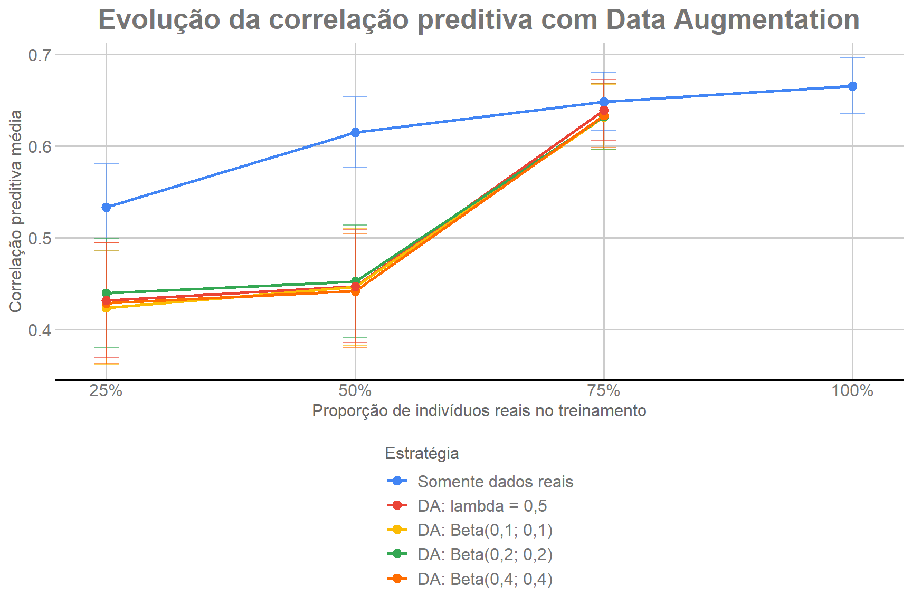
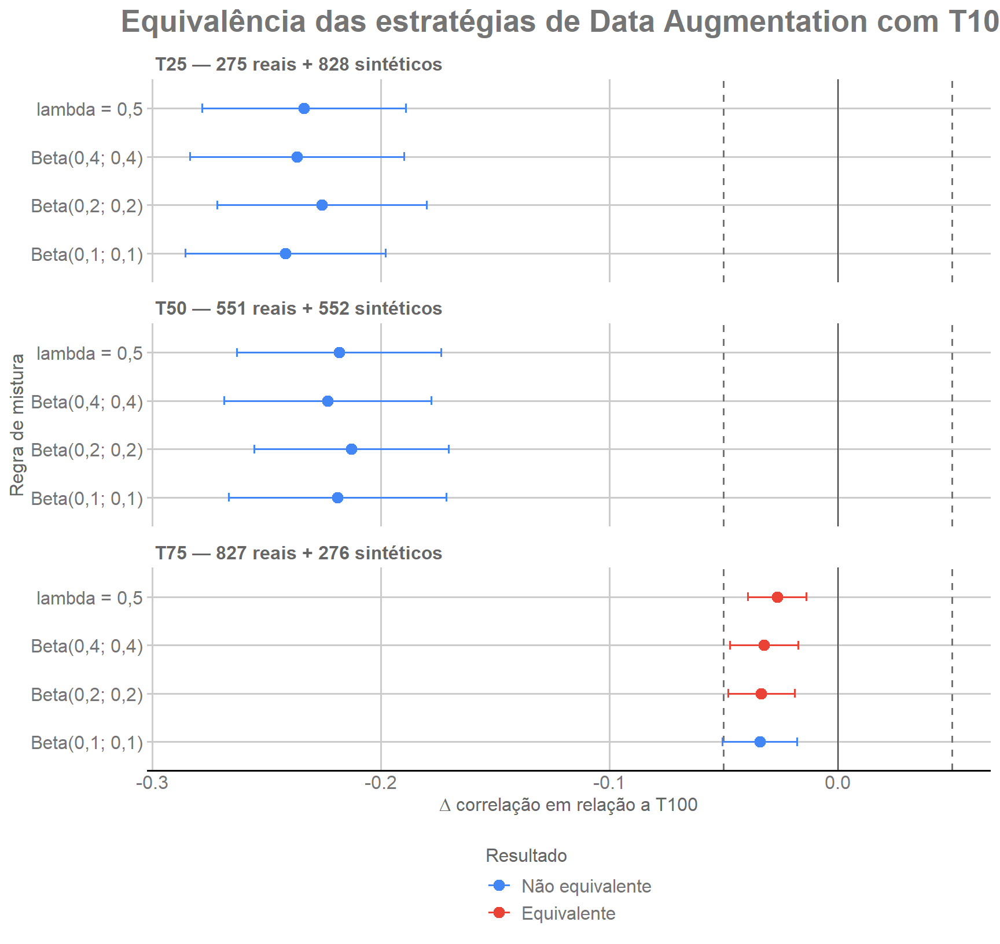

Last updated: 2026-08-11
Checks: 7 0
Knit directory:
genomic-prediction-data-augmentation/
This reproducible R Markdown analysis was created with workflowr (version 1.7.2). The Checks tab describes the reproducibility checks that were applied when the results were created. The Past versions tab lists the development history.
Great! Since the R Markdown file has been committed to the Git repository, you know the exact version of the code that produced these results.
Great job! The global environment was empty. Objects defined in the global environment can affect the analysis in your R Markdown file in unknown ways. For reproduciblity it’s best to always run the code in an empty environment.
The command set.seed(20260810) was run prior to running
the code in the R Markdown file. Setting a seed ensures that any results
that rely on randomness, e.g. subsampling or permutations, are
reproducible.
Great job! Recording the operating system, R version, and package versions is critical for reproducibility.
Nice! There were no cached chunks for this analysis, so you can be confident that you successfully produced the results during this run.
Great job! Using relative paths to the files within your workflowr project makes it easier to run your code on other machines.
Great! You are using Git for version control. Tracking code development and connecting the code version to the results is critical for reproducibility.
The results in this page were generated with repository version 8e6d035. See the Past versions tab to see a history of the changes made to the R Markdown and HTML files.
Note that you need to be careful to ensure that all relevant files for
the analysis have been committed to Git prior to generating the results
(you can use wflow_publish or
wflow_git_commit). workflowr only checks the R Markdown
file, but you know if there are other scripts or data files that it
depends on. Below is the status of the Git repository when the results
were generated:
Ignored files:
Ignored: .Rproj.user/
Ignored: ETA_1_varU.dat
Ignored: data/artigo_submissãoCBA_26_1_nias_licae_.pdf
Ignored: data/dados_gblup.csv
Ignored: mu.dat
Ignored: output/01_data_objects.rds
Ignored: output/02_splits_mestre_30rep.rds
Ignored: output/03_genomic_objects.rds
Ignored: output/checkpoints/06_da_progress.csv
Ignored: output/figures/
Ignored: varE.dat
Note that any generated files, e.g. HTML, png, CSS, etc., are not included in this status report because it is ok for generated content to have uncommitted changes.
These are the previous versions of the repository in which changes were
made to the R Markdown (analysis/06_data_augmentation.Rmd)
and HTML (docs/06_data_augmentation.html) files. If you’ve
configured a remote Git repository (see ?wflow_git_remote),
click on the hyperlinks in the table below to view the files as they
were in that past version.
| File | Version | Author | Date | Message |
|---|---|---|---|---|
| Rmd | bb13fdc | Weverton Gomes da Costa | 2026-08-11 | Refine data augmentation tutorial flow |
| html | 2a08bbb | WevertonGomesCosta | 2026-08-11 | Publish clearer data augmentation tutorial |
| Rmd | a0522f2 | Weverton Gomes da Costa | 2026-08-11 | Fix split indexing in DA tutorial loops |
| Rmd | 37b2f74 | Weverton Gomes da Costa | 2026-08-11 | Reorganize DA tutorial into explicit processing loops |
| html | 31e08a7 | WevertonGomesCosta | 2026-08-11 | Publish revised tutorial modules |
| Rmd | 3da6d12 | Weverton Gomes da Costa | 2026-08-11 | Clarify synthetic phenotype handling in Mixup pipeline |
| Rmd | 069030c | Weverton Gomes da Costa | 2026-08-11 | Reorganize data augmentation module into didactic stages |
| html | db45d13 | WevertonGomesCosta | 2026-08-11 | Publish revised tutorial site |
| Rmd | b6663a6 | Weverton Gomes da Costa | 2026-08-11 | Use common scale in DA equivalence figure |
| Rmd | a3f21ba | Weverton Gomes da Costa | 2026-08-11 | Restore data augmentation figures with GDocs style |
| html | d32edc6 | WevertonGomesCosta | 2026-08-11 | Publish workflowr tutorial site |
| Rmd | 26286f7 | Weverton Gomes da Costa | 2026-08-11 | Rebuild DA summaries from audited raw results |
| Rmd | 6fb12d9 | Weverton Gomes da Costa | 2026-08-11 | Rewrite Data Augmentation as explicit tutorial with audited results |
| Rmd | 44f8535 | Weverton Gomes da Costa | 2026-08-10 | Allow DA stage to bootstrap lightweight prerequisites |
| Rmd | 1b409e1 | Weverton Gomes da Costa | 2026-08-10 | Add stage 6 data augmentation |
Na Etapa 5 verificamos que T75, com 827 indivíduos reais, é a menor amostra considerada equivalente a T100. A pergunta final é se o aumento de dados (Data Augmentation, DA) pode reduzir ainda mais essa necessidade de indivíduos reais.
A estratégia adotada é completar cada amostra real reduzida com pseudoindivíduos criados por Mixup até que o conjunto de treinamento volte a ter o mesmo tamanho de T100:
\[ n_{syn}=1103-n_{real}. \]
Assim:
| Cenário | Reais | Sintéticos | Total |
|---|---|---|---|
| T25 + DA | 275 | 828 | 1.103 |
| T50 + DA | 551 | 552 | 1.103 |
| T75 + DA | 827 | 276 | 1.103 |
Os 276 indivíduos de validação permanecem fora do conjunto fenotípico de treinamento. Portanto, a comparação pergunta se pseudoindivíduos conseguem compensar parte da informação perdida quando indivíduos reais são retirados de T100.
O Mixup combina dois indivíduos reais distintos do conjunto de
treinamento. Chamaremos esses indivíduos de doador i e
doador j.
Para os marcadores:
\[ \widetilde{M}=\lambda M_i+(1-\lambda)M_j. \]
Para o fenótipo:
\[ \widetilde{y}=\lambda y_i+(1-\lambda)y_j. \]
O parâmetro \(\lambda\) determina
quanto cada doador contribui para o pseudoindivíduo. Se
lambda = 0.5, os dois doadores contribuem igualmente. Se
lambda estiver próximo de 1, o pseudoindivíduo fica mais
próximo do primeiro doador; se estiver próximo de 0, fica mais próximo
do segundo.
O resultado é uma interpolação matemática. O pseudoindivíduo não representa um novo indivíduo biológico observado e os valores dos marcadores sintéticos podem ser fracionários, mesmo que os genótipos reais estejam codificados como 0, 1 e 2.
Os indivíduos reais usados no treinamento e os pares de doadores são escolhidos aleatoriamente. Nenhum ranking fenotípico é utilizado na geração dos dados sintéticos.
O parâmetro do Mixup deve permanecer entre 0 e 1. A distribuição Beta é particularmente conveniente porque possui exatamente esse suporte:
\[ 0 < \lambda < 1. \]
Utilizamos distribuições simétricas Beta(alpha, alpha).
Essa simetria tem duas propriedades úteis para o desenho deste
estudo:
lambda é 0,5, portanto nenhum dos dois
doadores recebe maior peso a priori;alpha.Para uma distribuição simétrica:
\[ E(\lambda)=0.5. \]
Quando alpha < 1, a distribuição tem formato em U e
concentra maior probabilidade perto de 0 e 1. Isso faz com que muitos
pseudoindivíduos fiquem mais próximos de um dos dois doadores, em vez de
serem sempre o ponto médio entre eles.
Neste estudo comparamos quatro regras:
lambda = 0.5: referência em que toda mistura é
exatamente 50/50;Beta(0.1, 0.1): mistura variável fortemente concentrada
próximo dos extremos;Beta(0.2, 0.2): concentração extrema um pouco
menor;Beta(0.4, 0.4): ainda favorece os extremos, mas produz
misturas menos extremas que as duas anteriores.Os valores 0.1, 0.2 e 0.4
formam, portanto, uma grade de sensibilidade dentro do
regime alpha < 1. Eles permitem avaliar se o desempenho
muda à medida que os pseudoindivíduos passam de misturas muito próximas
de um dos doadores para interpolações progressivamente menos extremas.
Esses valores são níveis avaliados neste estudo, e não recomendações
universais para Mixup.
Todos os parâmetros principais são definidos antes do pipeline. Dessa
forma, é possível identificar em um único ponto os tamanhos de
treinamento, o número de repetições, os parâmetros do BGLR e as regras
usadas para gerar lambda.
# Tamanho de referência e tamanhos reais avaliados.
N_T100 <- 1103
PROPORCOES <- c(0.25, 0.50, 0.75)
N_REP <- 30
# Parâmetros do BGLR, iguais aos utilizados com os dados reais.
N_ITER <- 10000
BURN_IN <- 5000
# Arquivos com os resultados primários usados nas comparações.
DA_RESULTS_FILE <- "results/06_da_results.csv"
REAL_RESULTS_FILE <- "results/04_baseline_results.csv"
# Regras de mistura avaliadas.
configs <- data.frame(
config_mistura = c(
"lambda_fixo_0.5",
"beta_alpha_0.1",
"beta_alpha_0.2",
"beta_alpha_0.4"
),
tipo_mistura = c(
"fixed",
"beta",
"beta",
"beta"
),
lambda_fixo = c(
0.5,
NA,
NA,
NA
),
alpha = c(
NA,
0.10,
0.20,
0.40
),
stringsAsFactors = FALSE
)
configs_exibicao <- data.frame(
Regra = c(
"lambda = 0,5",
"Beta(0,1; 0,1)",
"Beta(0,2; 0,2)",
"Beta(0,4; 0,4)"
),
Tipo = c(
"Fixa",
"Beta simétrica",
"Beta simétrica",
"Beta simétrica"
),
`Lambda fixo` = configs$lambda_fixo,
Alpha = configs$alpha,
check.names = FALSE
)
knitr::kable(
configs_exibicao,
caption = "Parâmetros das quatro regras de mistura"
)| Regra | Tipo | Lambda fixo | Alpha |
|---|---|---|---|
| lambda = 0,5 | Fixa | 0.5 | NA |
| Beta(0,1; 0,1) | Beta simétrica | NA | 0.1 |
| Beta(0,2; 0,2) | Beta simétrica | NA | 0.2 |
| Beta(0,4; 0,4) | Beta simétrica | NA | 0.4 |
A combinação de quatro regras de mistura, três tamanhos reais e 30 repetições produz:
\[ 4\times3\times30=360 \]
combinações de aumento de dados.
Antes de construir os cenários, recuperamos os objetos definidos nos módulos anteriores. Os fenótipos e marcadores vêm da Etapa 1, os conjuntos de treinamento e validação vêm da Etapa 2 e os componentes da matriz genômica vêm da Etapa 3.
# Fenótipos e marcadores dos 1.379 indivíduos reais.
obj <- readRDS("output/01_data_objects.rds")
y <- obj$y
M <- obj$M
n <- obj$n
# Conjuntos de treinamento e validação das 30 repetições.
splits_mestre <- readRDS("output/02_splits_mestre_30rep.rds")
# Componentes usados para construir a matriz genômica.
gobj <- readRDS("output/03_genomic_objects.rds")
p <- gobj$p
Z <- gobj$Z
G <- gobj$G
denominador <- gobj$denomO aumento de dados é apresentado em etapas sucessivas. Cada subseção mostra um processo específico: definição dos conjuntos reais, sorteio dos doadores, interpolação dos pseudoindivíduos, expansão da matriz genômica, construção do vetor fenotípico e ajuste do GBLUP.
Primeiro construímos uma tabela que identifica os 360 cenários. Para cada regra de mistura, tamanho real e repetição, recuperamos o mesmo conjunto de treinamento e a mesma validação usados com os dados reais.
cenarios_da <- data.frame()
for (ci in seq_len(nrow(configs))) {
for (proporcao in PROPORCOES) {
for (rep in seq_len(N_REP)) {
# Recupera o mesmo conjunto usado na análise com dados reais.
split <- splits_mestre[[as.character(proporcao)]][[rep]]
treino <- split$treino
validacao <- split$valid
# Define quantos indivíduos reais e sintéticos entram no cenário.
n_real <- length(treino)
n_syn <- N_T100 - n_real
stopifnot(length(validacao) == 276)
stopifnot(n_real + n_syn == N_T100)
# Registra a combinação atual.
cenarios_da <- rbind(
cenarios_da,
data.frame(
ci = ci,
config_mistura = configs$config_mistura[ci],
tipo_mistura = configs$tipo_mistura[ci],
lambda_fixo = configs$lambda_fixo[ci],
alpha = configs$alpha[ci],
repeticao = rep,
proporcao_pool = proporcao,
n_real = n_real,
n_syn = n_syn,
n_total_treino = n_real + n_syn
)
)
}
}
}
stopifnot(nrow(cenarios_da) == 360)Essa tabela torna explícito que a variação entre os cenários ocorre em três dimensões: regra de mistura, quantidade de indivíduos reais e repetição. O tamanho total do treinamento permanece sempre igual a 1.103.
Depois definimos, para cada cenário, os dois doadores de cada
pseudoindivíduo e o peso lambda usado na interpolação. Os
doadores são sorteados com reposição, mas os dois integrantes de uma
mesma mistura são sempre diferentes.
O sorteio dos doadores e a geração de lambda permanecem
na mesma etapa porque fazem parte da mesma realização aleatória do
Mixup. Para as distribuições Beta, lambda é gerado depois
dos dois doadores.
misturas_da <- vector(
"list",
nrow(cenarios_da)
)
for (s in seq_len(nrow(cenarios_da))) {
# Identifica o cenário atual.
cenario <- cenarios_da[s, ]
proporcao_chave <- as.character(cenario$proporcao_pool)
split <- splits_mestre[[proporcao_chave]][[cenario$repeticao]]
treino <- split$treino
n_real <- length(treino)
n_syn <- cenario$n_syn
# Semente específica da regra, tamanho e repetição atuais.
seed_da <-
200000 +
cenario$ci * 10000 +
as.integer(cenario$proporcao_pool * 100) * 100 +
cenario$repeticao
set.seed(seed_da)
# Primeiro doador.
idx1 <- sample(
seq_len(n_real),
n_syn,
replace = TRUE
)
# Segundo doador, sempre diferente do primeiro.
idx2_base <- sample(
seq_len(n_real - 1),
n_syn,
replace = TRUE
)
idx2 <- ifelse(
idx2_base >= idx1,
idx2_base + 1L,
idx2_base
)
stopifnot(all(idx1 != idx2))
# Gera o peso de mistura correspondente à regra atual.
if (cenario$tipo_mistura == "fixed") {
lambda <- rep(
cenario$lambda_fixo,
n_syn
)
} else {
lambda <- rbeta(
n_syn,
shape1 = cenario$alpha,
shape2 = cenario$alpha
)
}
# Guarda as informações necessárias para reconstruir o Mixup.
misturas_da[[s]] <- list(
idx1 = idx1,
idx2 = idx2,
lambda = lambda
)
}A lista misturas_da contém, para cada um dos 360
cenários, os pares de doadores e seus respectivos valores de
lambda. O parâmetro alpha modifica somente a
distribuição desses pesos; ele não altera n_real ou
n_syn.
Com os doadores e os pesos definidos, a próxima etapa é a
interpolação dos marcadores e do fenótipo. O mesmo lambda é
aplicado aos dois tipos de informação para manter coerência entre a
posição genômica interpolada e o valor fenotípico atribuído ao
pseudoindivíduo.
for (s in seq_len(nrow(cenarios_da))) {
# Recupera o cenário e o conjunto real de treinamento.
cenario <- cenarios_da[s, ]
proporcao_chave <- as.character(cenario$proporcao_pool)
split <- splits_mestre[[proporcao_chave]][[cenario$repeticao]]
treino <- split$treino
M_train <- M[
treino,
,
drop = FALSE
]
y_train <- y[treino]
# Recupera os doadores e os pesos do Mixup.
mistura <- misturas_da[[s]]
idx1 <- mistura$idx1
idx2 <- mistura$idx2
lambda <- mistura$lambda
# Interpola os marcadores dos dois doadores.
M_syn <-
lambda * M_train[idx1, , drop = FALSE] +
(1 - lambda) * M_train[idx2, , drop = FALSE]
# Interpola os fenótipos usando os mesmos pesos.
y_syn <-
lambda * y_train[idx1] +
(1 - lambda) * y_train[idx2]
stopifnot(nrow(M_syn) == cenario$n_syn)
stopifnot(length(y_syn) == cenario$n_syn)
}Em cada iteração, M_syn possui uma linha para cada
pseudoindivíduo e 4.325 colunas de marcadores. Já y_syn
contém o valor fenotípico interpolado de cada uma dessas mesmas
linhas.
Os pseudoindivíduos precisam entrar no mesmo espaço genômico dos
indivíduos reais. Por isso, para cada cenário reconstruímos
M_syn, centralizamos seus marcadores com as mesmas
frequências alélicas p e calculamos os novos blocos de
relacionamento.
A matriz real-real G é preservada integralmente. São
acrescentados apenas os blocos sintético-real, real-sintético e
sintético-sintético.
for (s in seq_len(nrow(cenarios_da))) {
# Recupera cenário, treinamento e definição do Mixup.
cenario <- cenarios_da[s, ]
proporcao_chave <- as.character(cenario$proporcao_pool)
split <- splits_mestre[[proporcao_chave]][[cenario$repeticao]]
treino <- split$treino
M_train <- M[
treino,
,
drop = FALSE
]
mistura <- misturas_da[[s]]
# Reconstrói os marcadores sintéticos do cenário atual.
M_syn <-
mistura$lambda * M_train[mistura$idx1, , drop = FALSE] +
(1 - mistura$lambda) * M_train[mistura$idx2, , drop = FALSE]
# Centraliza os marcadores sintéticos na mesma escala dos dados reais.
Z_syn <- sweep(
M_syn,
2,
2 * p,
FUN = "-"
)
# Calcula os novos blocos de relacionamento.
G_syn_real <- tcrossprod(
Z_syn,
Z
) / denominador
G_syn_syn <- tcrossprod(
Z_syn
) / denominador
# Monta a matriz expandida em quatro blocos.
G_expanded <- rbind(
cbind(
G,
t(G_syn_real)
),
cbind(
G_syn_real,
G_syn_syn
)
)
idx_syn <- (n + 1):(n + cenario$n_syn)
# Pequeno ajuste numérico somente na diagonal dos sintéticos.
G_expanded[
cbind(idx_syn, idx_syn)
] <-
G_expanded[cbind(idx_syn, idx_syn)] +
1e-6
# Confere simetria e preservação do bloco real-real.
stopifnot(
max(
abs(G_expanded - t(G_expanded))
) < 1e-8
)
stopifnot(
max(
abs(
G_expanded[seq_len(n), seq_len(n)] - G
)
) < 1e-12
)
}A forma em blocos deixa explícita a estrutura da matriz:
\[ G_{expanded}= \begin{bmatrix} G & G_{real,syn}\\ G_{syn,real} & G_{syn,syn} \end{bmatrix}. \]
Assim, todos os relacionamentos existentes entre os 1.379 indivíduos reais são mantidos e os pseudoindivíduos são acrescentados na mesma escala genômica.
A matriz expandida inclui todos os indivíduos reais e os pseudoindivíduos, mas o modelo só recebe valores fenotípicos para dois grupos: indivíduos reais do treinamento e pseudoindivíduos.
Os indivíduos reais fora do treinamento, incluindo toda a validação,
permanecem com NA.
for (s in seq_len(nrow(cenarios_da))) {
# Recupera cenário e conjunto correspondente.
cenario <- cenarios_da[s, ]
proporcao_chave <- as.character(cenario$proporcao_pool)
split <- splits_mestre[[proporcao_chave]][[cenario$repeticao]]
treino <- split$treino
validacao <- split$valid
y_train <- y[treino]
mistura <- misturas_da[[s]]
# Reconstrói os fenótipos sintéticos.
y_syn <-
mistura$lambda * y_train[mistura$idx1] +
(1 - mistura$lambda) * y_train[mistura$idx2]
# Os 1.379 indivíduos reais começam mascarados; os sintéticos são anexados.
y_modelo <- c(
rep(NA_real_, n),
y_syn
)
# Apenas os fenótipos reais do treinamento são revelados.
y_modelo[treino] <- y_train
reais_fora_treino <- setdiff(
seq_len(n),
treino
)
stopifnot(all(is.na(y_modelo[validacao])))
stopifnot(all(is.na(y_modelo[reais_fora_treino])))
stopifnot(sum(!is.na(y_modelo)) == N_T100)
}Portanto, todos os cenários fornecem 1.103 valores fenotípicos ao
modelo. A diferença é que apenas n_real desses valores são
observações reais; os demais são interpolações produzidas pelo
Mixup.
As subseções anteriores mostraram separadamente como cada componente
é obtido. No ajuste, esses componentes são reconstruídos para o cenário
atual e usados imediatamente no GBLUP. A forma em blocos de
G_expanded e a construção direta de y_modelo
deixam esse loop concentrado apenas nas operações necessárias ao
modelo.
predicoes_da <- vector(
"list",
nrow(cenarios_da)
)
for (s in seq_len(nrow(cenarios_da))) {
# 1. Recupera cenário, treinamento, validação e definição do Mixup.
cenario <- cenarios_da[s, ]
proporcao_chave <- as.character(cenario$proporcao_pool)
split <- splits_mestre[[proporcao_chave]][[cenario$repeticao]]
treino <- split$treino
validacao <- split$valid
M_train <- M[treino, , drop = FALSE]
y_train <- y[treino]
mistura <- misturas_da[[s]]
# 2. Reconstrói os pseudoindivíduos.
M_syn <-
mistura$lambda * M_train[mistura$idx1, , drop = FALSE] +
(1 - mistura$lambda) * M_train[mistura$idx2, , drop = FALSE]
y_syn <-
mistura$lambda * y_train[mistura$idx1] +
(1 - mistura$lambda) * y_train[mistura$idx2]
# 3. Expande a matriz de relacionamento genômico.
Z_syn <- sweep(M_syn, 2, 2 * p, FUN = "-")
G_syn_real <- tcrossprod(Z_syn, Z) / denominador
G_syn_syn <- tcrossprod(Z_syn) / denominador
G_expanded <- rbind(
cbind(G, t(G_syn_real)),
cbind(G_syn_real, G_syn_syn)
)
idx_syn <- (n + 1):(n + cenario$n_syn)
G_expanded[cbind(idx_syn, idx_syn)] <-
G_expanded[cbind(idx_syn, idx_syn)] + 1e-6
# 4. Fornece fenótipos apenas para treinamento real e pseudoindivíduos.
y_modelo <- c(
rep(NA_real_, n),
y_syn
)
y_modelo[treino] <- y_train
# 5. Ajusta o componente genômico usando a matriz expandida como kernel.
ETA <- list(
list(
K = G_expanded,
model = "RKHS"
)
)
seed_bglr <-
260000 +
cenario$ci * 10000 +
as.integer(cenario$proporcao_pool * 100) * 100 +
cenario$repeticao
set.seed(seed_bglr)
ajuste <- BGLR::BGLR(
y = y_modelo,
ETA = ETA,
nIter = N_ITER,
burnIn = BURN_IN,
verbose = FALSE
)
# 6. Guarda observado e predito nos 276 indivíduos de validação.
predicoes_da[[s]] <- list(
observado = y[validacao],
predicao = ajuste$yHat[validacao]
)
}O modelo é mantido constante entre os 360 cenários. O que varia é o número de indivíduos reais e a regra usada para construir os pseudoindivíduos.
Por fim, percorremos as 360 predições e calculamos correlação, RMSE, MAE e inclinação de calibração. Cada linha da tabela final representa uma regra de mistura, um tamanho real e uma repetição.
resultados_da_calculados <- data.frame()
for (s in seq_len(nrow(cenarios_da))) {
# Recupera metadados do cenário e predições da validação.
cenario <- cenarios_da[s, ]
pred <- predicoes_da[[s]]
mistura <- misturas_da[[s]]
observado <- pred$observado
predicao <- pred$predicao
# Correlação preditiva.
correlacao <- cor(
observado,
predicao
)
# Raiz do erro quadrático médio.
RMSE <- sqrt(
mean(
(observado - predicao)^2
)
)
# Erro absoluto médio.
MAE <- mean(
abs(
observado - predicao
)
)
# Inclinação da regressão observado ~ predito.
calibracao <- lm(
observado ~ predicao
)
slope_calibracao <- unname(
coef(calibracao)[2]
)
# Acrescenta uma linha à tabela final.
resultados_da_calculados <- rbind(
resultados_da_calculados,
data.frame(
config_mistura = cenario$config_mistura,
tipo_mistura = cenario$tipo_mistura,
alpha = cenario$alpha,
repeticao = cenario$repeticao,
proporcao_pool = cenario$proporcao_pool,
n_real = cenario$n_real,
n_syn = cenario$n_syn,
n_total_treino = cenario$n_total_treino,
correlacao = correlacao,
RMSE = RMSE,
MAE = MAE,
slope_calibracao = slope_calibracao,
media_lambda = mean(mistura$lambda),
sd_lambda = sd(mistura$lambda)
)
)
}
stopifnot(nrow(resultados_da_calculados) == 360)
write.csv(
resultados_da_calculados,
DA_RESULTS_FILE,
row.names = FALSE
)O pipeline passa, portanto, das 360 combinações definidas na Seção 6.1 para uma tabela com uma linha de desempenho por cenário e repetição. Esse é o arquivo primário usado nas comparações seguintes.
As análises abaixo utilizam a tabela primária
results/06_da_results.csv. Antes de resumir os resultados,
verificamos se as 360 combinações esperadas estão presentes e se cada
regra × tamanho contém 30 repetições.
resultados_da <- read.csv(
DA_RESULTS_FILE
)
# Chave única: regra de mistura × tamanho real × repetição.
chaves_da <- paste(
resultados_da$config_mistura,
resultados_da$proporcao_pool,
resultados_da$repeticao,
sep = "__"
)
stopifnot(nrow(resultados_da) == 360)
stopifnot(anyDuplicated(chaves_da) == 0)
stopifnot(all(resultados_da$repeticao %in% 1:30))
stopifnot(all(resultados_da$n_total_treino == 1103))
stopifnot(all(resultados_da$n_real + resultados_da$n_syn == 1103))
stopifnot(
!anyNA(
resultados_da[
,
c(
"correlacao",
"RMSE",
"MAE",
"slope_calibracao"
)
]
)
)
contagem_cenarios <- aggregate(
repeticao ~ config_mistura + proporcao_pool,
data = resultados_da,
FUN = length
)
stopifnot(all(contagem_cenarios$repeticao == 30))As 360 linhas correspondem a 12 cenários principais: quatro regras de mistura avaliadas em T25, T50 e T75. Para cada cenário calculamos média e desvio-padrão das métricas ao longo das 30 repetições.
variaveis_grupo <- c(
"config_mistura",
"proporcao_pool",
"n_real",
"n_syn"
)
# Médias das métricas e dos valores de lambda.
resumo_media <- aggregate(
cbind(
correlacao,
RMSE,
MAE,
slope_calibracao,
media_lambda,
sd_lambda
) ~ config_mistura + proporcao_pool + n_real + n_syn,
data = resultados_da,
FUN = mean
)
names(resumo_media)[5:10] <- c(
"mean_cor",
"mean_RMSE",
"mean_MAE",
"mean_slope",
"mean_lambda",
"mean_sd_lambda"
)
# Variabilidade das métricas entre repetições.
resumo_sd <- aggregate(
cbind(
correlacao,
RMSE,
MAE,
slope_calibracao
) ~ config_mistura + proporcao_pool + n_real + n_syn,
data = resultados_da,
FUN = sd
)
names(resumo_sd)[5:8] <- c(
"sd_cor",
"sd_RMSE",
"sd_MAE",
"sd_slope"
)
resumo_da <- merge(
resumo_media,
resumo_sd,
by = variaveis_grupo
)
resumo_exibicao <- resumo_da[
order(
resumo_da$proporcao_pool,
-resumo_da$mean_cor
),
c(
"config_mistura",
"n_real",
"n_syn",
"mean_cor",
"sd_cor",
"mean_RMSE",
"mean_MAE",
"mean_slope"
)
]
names(resumo_exibicao) <- c(
"Estratégia de mistura",
"Indivíduos reais",
"Pseudoindivíduos",
"Correlação média",
"DP da correlação",
"RMSE médio",
"MAE médio",
"Inclinação média"
)
knitr::kable(
resumo_exibicao,
digits = 4,
caption = "Resumo dos 360 ajustes com aumento de dados"
)| Estratégia de mistura | Indivíduos reais | Pseudoindivíduos | Correlação média | DP da correlação | RMSE médio | MAE médio | Inclinação média | |
|---|---|---|---|---|---|---|---|---|
| 4 | beta_alpha_0.2 | 275 | 828 | 0.4398 | 0.0596 | 685.5431 | 545.2044 | 0.4113 |
| 10 | lambda_fixo_0.5 | 275 | 828 | 0.4319 | 0.0630 | 690.6369 | 548.5947 | 0.4038 |
| 7 | beta_alpha_0.4 | 275 | 828 | 0.4289 | 0.0659 | 698.9813 | 555.3197 | 0.3949 |
| 1 | beta_alpha_0.1 | 275 | 828 | 0.4237 | 0.0621 | 694.8440 | 553.2972 | 0.3983 |
| 5 | beta_alpha_0.2 | 551 | 552 | 0.4526 | 0.0614 | 694.0347 | 553.3651 | 0.4021 |
| 11 | lambda_fixo_0.5 | 551 | 552 | 0.4473 | 0.0615 | 703.8796 | 559.1611 | 0.3919 |
| 2 | beta_alpha_0.1 | 551 | 552 | 0.4466 | 0.0640 | 701.7104 | 556.9321 | 0.3934 |
| 8 | beta_alpha_0.4 | 551 | 552 | 0.4423 | 0.0615 | 707.1385 | 562.8522 | 0.3874 |
| 12 | lambda_fixo_0.5 | 827 | 276 | 0.6389 | 0.0331 | 481.7447 | 381.5474 | 0.8594 |
| 9 | beta_alpha_0.4 | 827 | 276 | 0.6332 | 0.0352 | 486.2463 | 385.3636 | 0.8399 |
| 6 | beta_alpha_0.2 | 827 | 276 | 0.6320 | 0.0355 | 486.9749 | 386.1805 | 0.8391 |
| 3 | beta_alpha_0.1 | 827 | 276 | 0.6313 | 0.0354 | 487.7379 | 386.3879 | 0.8338 |
Para T25 e T50, Beta(0.2, 0.2) apresenta a maior
correlação média entre as quatro regras avaliadas. Para T75, a maior
média é obtida com lambda = 0.5. Essas comparações
identificam a melhor regra dentro de cada tamanho real, mas ainda não
dizem se o aumento de dados melhora o modelo em relação ao uso dos
mesmos indivíduos reais sem pseudoindivíduos.
A inclinação de calibração é interpretada como na Etapa 4. Valores próximos de 1 indicam escala adequada. Valores menores que 1 indicam que as predições estão mais dispersas em escala do que os valores observados. Nos cenários de aumento de dados, as inclinações médias permanecem abaixo de 1, indicando excesso de variação na escala das predições, especialmente nos conjuntos com menor número de indivíduos reais.
Para atribuir algum ganho ao aumento de dados, precisamos comparar cada cenário com o GBLUP que possui a mesma quantidade de indivíduos reais. Assim, T25 + DA é comparado com T25 real, T50 + DA com T50 real e T75 + DA com T75 real, sempre dentro da mesma repetição.
baseline <- read.csv(
REAL_RESULTS_FILE
)
stopifnot(nrow(baseline) == 120)
# Mantém apenas T25, T50 e T75 do conjunto de referência com dados reais.
baseline_reduzido <- baseline[
baseline$proporcao_pool < 1,
c(
"repeticao",
"proporcao_pool",
"correlacao",
"RMSE",
"MAE"
)
]
names(baseline_reduzido)[3:5] <- c(
"correlacao_real",
"RMSE_real",
"MAE_real"
)
# Pareia aumento de dados e dados reais pela repetição e pelo tamanho real.
comparacao_real <- merge(
resultados_da,
baseline_reduzido,
by = c(
"repeticao",
"proporcao_pool"
)
)
stopifnot(nrow(comparacao_real) == 360)
# Diferenças: aumento de dados menos o modelo com somente dados reais.
comparacao_real$delta_cor_DA_real <-
comparacao_real$correlacao -
comparacao_real$correlacao_real
comparacao_real$delta_RMSE_DA_real <-
comparacao_real$RMSE -
comparacao_real$RMSE_real
comparacao_real$delta_MAE_DA_real <-
comparacao_real$MAE -
comparacao_real$MAE_real
resumo_da_vs_real <- aggregate(
cbind(
delta_cor_DA_real,
delta_RMSE_DA_real,
delta_MAE_DA_real
) ~ config_mistura + proporcao_pool + n_real,
data = comparacao_real,
FUN = mean
)
resumo_da_vs_real_exibicao <- resumo_da_vs_real[
order(
resumo_da_vs_real$proporcao_pool,
-resumo_da_vs_real$delta_cor_DA_real
),
]
names(resumo_da_vs_real_exibicao) <- c(
"Estratégia de mistura",
"Proporção do pool",
"Indivíduos reais",
"Diferença média de correlação",
"Diferença média de RMSE",
"Diferença média de MAE"
)
knitr::kable(
resumo_da_vs_real_exibicao,
digits = 4,
caption = "Aumento de dados versus o mesmo tamanho de amostra real"
)| Estratégia de mistura | Proporção do pool | Indivíduos reais | Diferença média de correlação | Diferença média de RMSE | Diferença média de MAE | |
|---|---|---|---|---|---|---|
| 2 | beta_alpha_0.2 | 0.25 | 275 | -0.0937 | 158.7185 | 128.1701 |
| 4 | lambda_fixo_0.5 | 0.25 | 275 | -0.1016 | 163.8123 | 131.5605 |
| 3 | beta_alpha_0.4 | 0.25 | 275 | -0.1046 | 172.1567 | 138.2855 |
| 1 | beta_alpha_0.1 | 0.25 | 275 | -0.1097 | 168.0194 | 136.2629 |
| 6 | beta_alpha_0.2 | 0.50 | 551 | -0.1621 | 204.1484 | 164.8218 |
| 8 | lambda_fixo_0.5 | 0.50 | 551 | -0.1674 | 213.9933 | 170.6178 |
| 5 | beta_alpha_0.1 | 0.50 | 551 | -0.1681 | 211.8241 | 168.3888 |
| 7 | beta_alpha_0.4 | 0.50 | 551 | -0.1724 | 217.2522 | 174.3089 |
| 12 | lambda_fixo_0.5 | 0.75 | 827 | -0.0093 | 9.3900 | 7.4086 |
| 11 | beta_alpha_0.4 | 0.75 | 827 | -0.0150 | 13.8917 | 11.2248 |
| 10 | beta_alpha_0.2 | 0.75 | 827 | -0.0162 | 14.6202 | 12.0418 |
| 9 | beta_alpha_0.1 | 0.75 | 827 | -0.0169 | 15.3832 | 12.2491 |
Para a correlação, valores positivos indicariam vantagem do aumento de dados. Para RMSE e MAE, valores negativos indicariam redução do erro.
Nas 12 combinações, a diferença média de correlação é negativa. Portanto, nenhuma das quatro regras de Mixup melhora, em média, o GBLUP correspondente que usa somente a mesma quantidade de indivíduos reais.
A figura reúne em uma única escala o conjunto de referência com dados
reais e as quatro regras de Mixup. Ela permite comparar simultaneamente
o efeito do tamanho da amostra real e o comportamento das diferentes
distribuições de lambda.
if (!requireNamespace("ggplot2", quietly = TRUE)) {
stop("Instale o pacote ggplot2 para gerar as figuras do tutorial.")
}
if (!requireNamespace("ggthemes", quietly = TRUE)) {
stop("Instale o pacote ggthemes para usar o padrão gráfico GDocs.")
}
rotulos_config <- c(
"lambda_fixo_0.5" = "DA: lambda = 0,5",
"beta_alpha_0.1" = "DA: Beta(0,1; 0,1)",
"beta_alpha_0.2" = "DA: Beta(0,2; 0,2)",
"beta_alpha_0.4" = "DA: Beta(0,4; 0,4)"
)
# Média e desvio-padrão dos modelos com somente dados reais.
baseline_media <- aggregate(
correlacao ~ proporcao_pool,
data = baseline,
FUN = mean
)
baseline_sd <- aggregate(
correlacao ~ proporcao_pool,
data = baseline,
FUN = sd
)
baseline_media$sd_cor <- baseline_sd$correlacao[
match(
baseline_media$proporcao_pool,
baseline_sd$proporcao_pool
)
]
plot_real <- data.frame(
Proporcao = baseline_media$proporcao_pool,
Media = baseline_media$correlacao,
SD = baseline_media$sd_cor,
Estrategia = "Somente dados reais"
)
# Média e desvio-padrão das quatro regras de aumento de dados.
plot_da <- data.frame(
Proporcao = resumo_da$proporcao_pool,
Media = resumo_da$mean_cor,
SD = resumo_da$sd_cor,
Estrategia = unname(
rotulos_config[resumo_da$config_mistura]
)
)
dados_evolucao <- rbind(
plot_real,
plot_da
)
dados_evolucao$Proporcao_percentual <- dados_evolucao$Proporcao * 100
dados_evolucao$Estrategia <- factor(
dados_evolucao$Estrategia,
levels = c(
"Somente dados reais",
"DA: lambda = 0,5",
"DA: Beta(0,1; 0,1)",
"DA: Beta(0,2; 0,2)",
"DA: Beta(0,4; 0,4)"
)
)
cores_evolucao <- ggthemes::gdocs_pal()(5)
figura_evolucao_da <- ggplot2::ggplot(
dados_evolucao,
ggplot2::aes(
x = Proporcao_percentual,
y = Media,
color = Estrategia,
group = Estrategia
)
) +
ggplot2::geom_errorbar(
ggplot2::aes(
ymin = Media - SD,
ymax = Media + SD
),
width = 2.5,
linewidth = 0.45,
alpha = 0.65
) +
ggplot2::geom_line(
linewidth = 0.9
) +
ggplot2::geom_point(
size = 2.6
) +
ggplot2::scale_color_manual(
values = cores_evolucao
) +
ggplot2::scale_x_continuous(
breaks = c(25, 50, 75, 100),
labels = c("25%", "50%", "75%", "100%")
) +
ggplot2::labs(
title = "Evolução da correlação preditiva com aumento de dados",
x = "Proporção de indivíduos reais no treinamento",
y = "Correlação preditiva média",
color = "Estratégia"
) +
ggthemes::theme_gdocs() +
ggplot2::theme(
plot.title = ggplot2::element_text(
face = "bold",
hjust = 0.5
),
legend.position = "bottom"
)
figura_evolucao_da
Evolução da correlação preditiva com dados reais e com as quatro estratégias de aumento de dados.
ggplot2::ggsave(
filename = "output/figures/06a_evolucao_correlacao_da.png",
plot = figura_evolucao_da,
width = 9,
height = 6,
dpi = 300
)A referência real aumenta de T25 até T100. As estratégias com Mixup aparecem em T25, T50 e T75 porque esses são os cenários nos quais tentamos substituir parte dos indivíduos reais por pseudoindivíduos.
A comparação anterior pergunta se o aumento de dados melhora o modelo em relação ao mesmo número de indivíduos reais. A pergunta principal do projeto é mais exigente:
Uma amostra reduzida completada com pseudoindivíduos pode atingir desempenho praticamente equivalente ao T100 formado por 1.103 indivíduos reais?
Para responder, cada ajuste com aumento de dados é pareado com o T100 real da mesma repetição.
# T100 real usado como referência em cada repetição.
t100 <- baseline[
baseline$proporcao_pool == 1,
c(
"repeticao",
"correlacao",
"RMSE",
"MAE"
)
]
names(t100)[2:4] <- c(
"correlacao_T100",
"RMSE_T100",
"MAE_T100"
)
# Pareia cada cenário de aumento de dados com T100 na mesma repetição.
comparacao_t100 <- merge(
resultados_da,
t100,
by = "repeticao"
)
stopifnot(nrow(comparacao_t100) == 360)
# Diferenças em relação ao T100 real.
comparacao_t100$delta_cor_vs_T100 <-
comparacao_t100$correlacao -
comparacao_t100$correlacao_T100
comparacao_t100$delta_RMSE_vs_T100 <-
comparacao_t100$RMSE -
comparacao_t100$RMSE_T100
comparacao_t100$delta_MAE_vs_T100 <-
comparacao_t100$MAE -
comparacao_t100$MAE_T100Usamos a mesma margem prática definida na Etapa 5:
\[ \delta=0.05. \]
A diferença de correlação é considerada praticamente equivalente a
T100 quando o intervalo de confiança de 90% permanece totalmente dentro
de [-0.05, +0.05] e os dois testes unilaterais do TOST são
significativos.
Como as 30 repetições utilizam amostras sobrepostas da mesma população, aplicamos a correção de Nadeau-Bengio:
\[ SE_{NB}= \sqrt{ \left( \frac{1}{R}+ \frac{n_{test}}{n_{train}} \right)s_d^2 }. \]
Aqui n_train = 1103, pois todos os cenários comparados
fornecem 1.103 valores fenotípicos ao modelo após combinar indivíduos
reais e pseudoindivíduos.
DELTA <- 0.05
ALPHA <- 0.05
R <- 30
N_TEST <- 276
N_TRAIN <- 1103
resultado_equivalencia_da <- data.frame()
for (config in configs$config_mistura) {
for (proporcao in PROPORCOES) {
# 1. Diferenças pareadas da configuração atual contra T100.
grupo <- comparacao_t100[
comparacao_t100$config_mistura == config &
comparacao_t100$proporcao_pool == proporcao,
]
d <- grupo$delta_cor_vs_T100
stopifnot(length(d) == 30)
media_d <- mean(d)
sd_d <- sd(d)
# 2. Erro-padrão corrigido de Nadeau-Bengio.
fator_NB <-
1 / R +
N_TEST / N_TRAIN
se_NB <- sqrt(
fator_NB * sd_d^2
)
gl <- length(d) - 1
# 3. Dois testes unilaterais do TOST.
p_inferior <- 1 - pt(
(media_d + DELTA) / se_NB,
df = gl
)
p_superior <- pt(
(media_d - DELTA) / se_NB,
df = gl
)
# 4. Intervalo de confiança de 90%.
t_critico <- qt(
1 - ALPHA,
df = gl
)
ic90_inf <- media_d - t_critico * se_NB
ic90_sup <- media_d + t_critico * se_NB
p_TOST <- max(
p_inferior,
p_superior
)
# 5. Critério conjunto para declarar equivalência prática.
equivalente <-
p_inferior < ALPHA &&
p_superior < ALPHA &&
ic90_inf > -DELTA &&
ic90_sup < DELTA
# 6. Armazena o resultado da configuração atual.
resultado_equivalencia_da <- rbind(
resultado_equivalencia_da,
data.frame(
Configuracao = config,
Proporcao = proporcao,
N_real = unique(grupo$n_real),
N_sintetico = unique(grupo$n_syn),
Delta_cor_media = media_d,
SE_NB = se_NB,
IC90_inf = ic90_inf,
IC90_sup = ic90_sup,
p_TOST = p_TOST,
Equivalente = equivalente
)
)
}
}
resultado_equivalencia_da_exibicao <- resultado_equivalencia_da[
order(
resultado_equivalencia_da$N_real,
-resultado_equivalencia_da$Delta_cor_media
),
]
names(resultado_equivalencia_da_exibicao) <- c(
"Estratégia de mistura",
"Proporção do pool",
"Indivíduos reais",
"Pseudoindivíduos",
"Diferença média de correlação",
"Erro-padrão corrigido",
"IC90% inferior",
"IC90% superior",
"p-valor TOST",
"Equivalente"
)
knitr::kable(
resultado_equivalencia_da_exibicao,
digits = 4,
caption = "Equivalência das estratégias de aumento de dados com T100"
)| Estratégia de mistura | Proporção do pool | Indivíduos reais | Pseudoindivíduos | Diferença média de correlação | Erro-padrão corrigido | IC90% inferior | IC90% superior | p-valor TOST | Equivalente | |
|---|---|---|---|---|---|---|---|---|---|---|
| 7 | beta_alpha_0.2 | 0.25 | 275 | 828 | -0.2257 | 0.0269 | -0.2715 | -0.1799 | 1.0000 | FALSE |
| 1 | lambda_fixo_0.5 | 0.25 | 275 | 828 | -0.2336 | 0.0262 | -0.2780 | -0.1892 | 1.0000 | FALSE |
| 10 | beta_alpha_0.4 | 0.25 | 275 | 828 | -0.2366 | 0.0276 | -0.2834 | -0.1898 | 1.0000 | FALSE |
| 4 | beta_alpha_0.1 | 0.25 | 275 | 828 | -0.2418 | 0.0257 | -0.2855 | -0.1980 | 1.0000 | FALSE |
| 8 | beta_alpha_0.2 | 0.50 | 551 | 552 | -0.2129 | 0.0251 | -0.2555 | -0.1703 | 1.0000 | FALSE |
| 2 | lambda_fixo_0.5 | 0.50 | 551 | 552 | -0.2182 | 0.0263 | -0.2629 | -0.1735 | 1.0000 | FALSE |
| 5 | beta_alpha_0.1 | 0.50 | 551 | 552 | -0.2189 | 0.0280 | -0.2664 | -0.1714 | 1.0000 | FALSE |
| 11 | beta_alpha_0.4 | 0.50 | 551 | 552 | -0.2232 | 0.0266 | -0.2684 | -0.1779 | 1.0000 | FALSE |
| 3 | lambda_fixo_0.5 | 0.75 | 827 | 276 | -0.0266 | 0.0075 | -0.0394 | -0.0139 | 0.0021 | TRUE |
| 12 | beta_alpha_0.4 | 0.75 | 827 | 276 | -0.0323 | 0.0088 | -0.0473 | -0.0173 | 0.0273 | TRUE |
| 9 | beta_alpha_0.2 | 0.75 | 827 | 276 | -0.0335 | 0.0086 | -0.0481 | -0.0189 | 0.0325 | TRUE |
| 6 | beta_alpha_0.1 | 0.75 | 827 | 276 | -0.0342 | 0.0096 | -0.0505 | -0.0178 | 0.0554 | FALSE |
Nenhuma estratégia com 275 ou 551 indivíduos reais é equivalente a T100. Algumas configurações de T75 + DA permanecem dentro da margem de equivalência, mas T75 já era equivalente a T100 usando somente indivíduos reais.
Cada ponto da figura representa a diferença média de correlação em
relação a T100. As barras mostram os intervalos de 90% corrigidos por
Nadeau-Bengio. As linhas tracejadas em -0.05 e
+0.05 delimitam a região de equivalência prática.
Para que uma configuração seja equivalente, todo o intervalo precisa ficar dentro dessa região, além de satisfazer o TOST.
rotulos_config_equiv <- c(
"lambda_fixo_0.5" = "lambda = 0,5",
"beta_alpha_0.1" = "Beta(0,1; 0,1)",
"beta_alpha_0.2" = "Beta(0,2; 0,2)",
"beta_alpha_0.4" = "Beta(0,4; 0,4)"
)
dados_equiv_da <- resultado_equivalencia_da
dados_equiv_da$Configuracao_rotulo <- unname(
rotulos_config_equiv[dados_equiv_da$Configuracao]
)
dados_equiv_da$Cenario_real <- factor(
dados_equiv_da$Proporcao,
levels = c(0.25, 0.50, 0.75),
labels = c(
"T25 — 275 reais + 828 sintéticos",
"T50 — 551 reais + 552 sintéticos",
"T75 — 827 reais + 276 sintéticos"
)
)
dados_equiv_da$Situacao <- ifelse(
dados_equiv_da$Equivalente,
"Equivalente",
"Não equivalente"
)
dados_equiv_da$Situacao <- factor(
dados_equiv_da$Situacao,
levels = c("Não equivalente", "Equivalente")
)
cores_equivalencia <- ggthemes::gdocs_pal()(2)
figura_equivalencia_da <- ggplot2::ggplot(
dados_equiv_da,
ggplot2::aes(
x = Configuracao_rotulo,
y = Delta_cor_media,
color = Situacao
)
) +
ggplot2::geom_hline(
yintercept = c(-DELTA, DELTA),
linetype = "dashed",
linewidth = 0.6,
color = "grey45"
) +
ggplot2::geom_hline(
yintercept = 0,
linewidth = 0.45,
color = "grey25"
) +
ggplot2::geom_errorbar(
ggplot2::aes(
ymin = IC90_inf,
ymax = IC90_sup
),
width = 0.18,
linewidth = 0.65
) +
ggplot2::geom_point(
size = 3
) +
ggplot2::facet_wrap(
~ Cenario_real,
ncol = 1,
scales = "fixed"
) +
ggplot2::scale_color_manual(
values = cores_equivalencia
) +
ggplot2::coord_flip() +
ggplot2::labs(
title = "Equivalência das estratégias de aumento de dados com T100",
x = "Regra de mistura",
y = expression(Delta * " correlação em relação a T100"),
color = "Resultado"
) +
ggthemes::theme_gdocs() +
ggplot2::theme(
plot.title = ggplot2::element_text(
face = "bold",
hjust = 0.5
),
strip.text = ggplot2::element_text(
face = "bold"
),
legend.position = "bottom"
)
figura_equivalencia_da
Diferenças de correlação das estratégias de aumento de dados em relação a T100, com IC90% corrigido por Nadeau-Bengio e margem de equivalência de ±0,05.
ggplot2::ggsave(
filename = "output/figures/06b_equivalencia_da_vs_T100.png",
plot = figura_equivalencia_da,
width = 9,
height = 8.5,
dpi = 300
)Sem aumento de dados, o menor conjunto real equivalente a T100 foi:
\[ 827\text{ indivíduos reais}. \]
Com as quatro regras de Mixup avaliadas, T25 e T50 continuam fora da região de equivalência. Portanto:
\[ \boxed{\text{redução adicional atribuível ao aumento de dados}=0}. \]
Sob este desenho, completar amostras aleatórias reduzidas até T100 com pseudoindivíduos Mixup não substitui a informação dos indivíduos reais retirados. Essa conclusão é específica às quatro regras de mistura e ao desenho avaliado neste estudo; ela não implica que qualquer estratégia de aumento de dados seja ineficaz.
sessionInfo()R version 4.5.1 (2025-06-13 ucrt)
Platform: x86_64-w64-mingw32/x64
Running under: Windows 11 x64 (build 26200)
Matrix products: default
LAPACK version 3.12.1
locale:
[1] LC_COLLATE=Portuguese_Brazil.utf8 LC_CTYPE=Portuguese_Brazil.utf8
[3] LC_MONETARY=Portuguese_Brazil.utf8 LC_NUMERIC=C
[5] LC_TIME=Portuguese_Brazil.utf8
time zone: America/Sao_Paulo
tzcode source: internal
attached base packages:
[1] stats graphics grDevices utils datasets methods base
loaded via a namespace (and not attached):
[1] gtable_0.3.6 jsonlite_2.0.0 dplyr_1.2.1 compiler_4.5.1
[5] promises_1.5.0 tidyselect_1.2.1 Rcpp_1.1.1 stringr_1.6.0
[9] git2r_0.36.2 dichromat_2.0-0.1 later_1.4.4 jquerylib_0.1.4
[13] textshaping_1.0.4 systemfonts_1.3.1 scales_1.4.0 yaml_2.3.12
[17] fastmap_1.2.0 ggplot2_4.0.3 R6_2.6.1 labeling_0.4.3
[21] generics_0.1.4 workflowr_1.7.2 knitr_1.50 tibble_3.3.1
[25] rprojroot_2.1.1 bslib_0.9.0 pillar_1.11.1 RColorBrewer_1.1-3
[29] ggthemes_5.2.0 rlang_1.1.7 cachem_1.1.0 stringi_1.8.7
[33] httpuv_1.6.16 xfun_0.54 S7_0.2.1 fs_1.6.6
[37] sass_0.4.10 otel_0.2.0 cli_3.6.5 withr_3.0.2
[41] magrittr_2.0.4 digest_0.6.39 grid_4.5.1 rstudioapi_0.17.1
[45] lifecycle_1.0.5 vctrs_0.7.1 evaluate_1.0.5 glue_1.8.0
[49] farver_2.1.2 whisker_0.4.1 ragg_1.5.0 purrr_1.2.1
[53] rmarkdown_2.30 tools_4.5.1 pkgconfig_2.0.3 htmltools_0.5.9